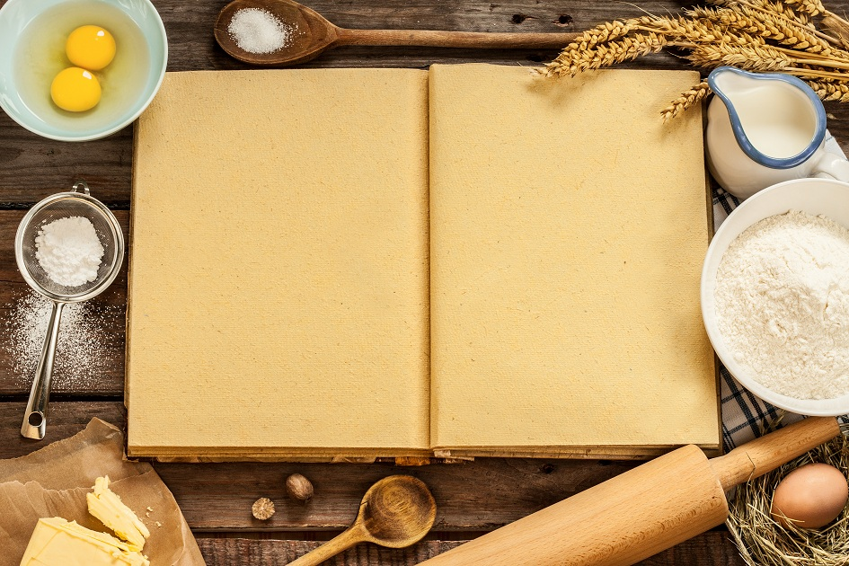

Explicando o Gênero
A receita é um gênero textual que apresenta duas partes bem definidas – ingredientes e modo de fazer -, que podem ou não vir indicadas por títulos. A primeira parte apenas relaciona os ingredientes, estipulando as quantidades necessárias, indicadas em gramas, xícaras, colheres, pitadas, etc. No modo de fazer, os verbos se apresentam quase sempre no modo imperativo (o modo verbal que expressa ordem, conselho, etc.), pois essa parte indica, passo a passo, a seqüência dos procedimentos e da junção dos ingredientes a ser seguida para se obter o melhor resultado da receita – no caso, pastéis de forno recheados de goiaba. Às vezes, o imperativo é substituído pelo infinitivo, como, por exemplo, “Preparar a massa: misturar com as pontas dos dedos [...]”, “Aos poucos, abrir pequenas porções da massa [...]”, etc. Uma receita pode apresentar outras informações, como grau de dificuldade, tempo médio de preparo, rendimento, calorias, etc. Pode, ainda, conter dicas para decoração ou para variações. Nesse gênero textual costuma-se empregar uma linguagem direta, clara e objetiva, pois sua finalidade é levar o leitor ou cozinheiro a obter sucesso no preparo de prato culinário.Características do gênero:
- Contém título;
- Normalmente apresenta uma estrutura constituída de: título, ingredientes e modo de preparo ou de fazer;
- No modo de fazer, os verbos geralmente são empregados no imperativo;.
- Pode conter indicação de calorias por porção, rendimento, dicas de preparo ou de como decorar e servir, etc.;
- A linguagem direta, clara e objetiva;
- Emprega o padrão culto da língua.
Função social do gênero:
- Quem escreve? R: Chefes de cozinha;
- Por quê? R: Instruir pessoas a prepararem pratos culinários passo a passo;
- Em que suporte? R: Sites, livros, programas de televisão, revistas, etc;
- Com qual finalidade? R: finalidade é levar o leitor ou cozinheiro a obter sucesso no preparo de prato culinário.
